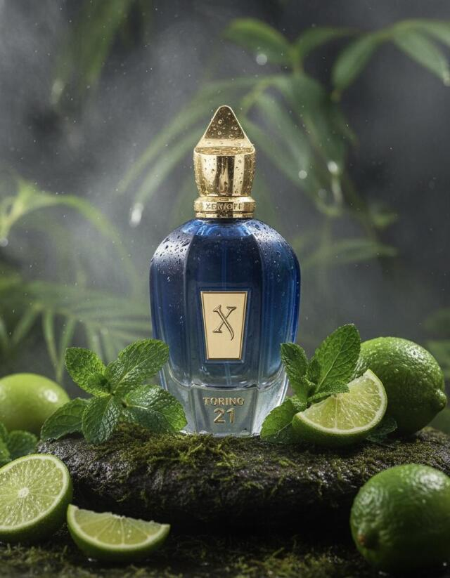

A lo largo de la historia, el perfume ha sido mucho más
que un simple aroma: ha representado identidad,
estatus
y emoción. En esta web se explora cómo las fragancias han
evolucionado junto a la
sociedad,
adaptándose a cada época
y reflejando tendencias, gustos y formas de expresión personal,
desde las
civilizaciones antiguas hasta la perfumería contemporánea.
Historia de los Perfumes
Antigüedad
El uso del perfume se remonta a las primeras civilizaciones como Egipto,
Mesopotamia y Grecia. En esta época, los perfumes se elaboraban a
partir de resinas, flores y aceites naturales, y se utilizaban
principalmente en rituales religiosos, ceremonias y embalsamamientos.
El aroma tenía un valor espiritual y simbólico, ya que se creía que
conectaba a los dioses con los humanos.
Edad Media
Durante la Edad Media, el perfume empezó a usarse también con fines medicinales
y de higiene. En un contexto donde el agua no se utilizaba con frecuencia, las
fragancias ayudaban a disimular los malos olores y a proteger contra enfermedades.
En esta etapa se introdujo el alcohol como base para los perfumes, lo que permitió
crear aromas más duraderos y complejos.
Siglos XVIII y XIX
Con el paso del tiempo, el perfume dejó de ser solo un producto funcional y se
convirtió en un símbolo de lujo y estatus social. En Francia, especialmente en
la ciudad de Grasse, nació la perfumería moderna. Se comenzaron a crear fragancias
más elaboradas y se popularizó el uso del perfume entre la alta sociedad europea.
Siglo XX y actualidad
En el siglo XX, el perfume se convirtió en un producto accesible para todo el público
gracias a la industrialización. Surgieron grandes marcas y perfumes icónicos que marcaron
época. Hoy en día, la perfumería combina tradición e innovación, dando lugar a fragancias
modernas, de autor y de diseño, que forman parte de la identidad personal de cada individuo.